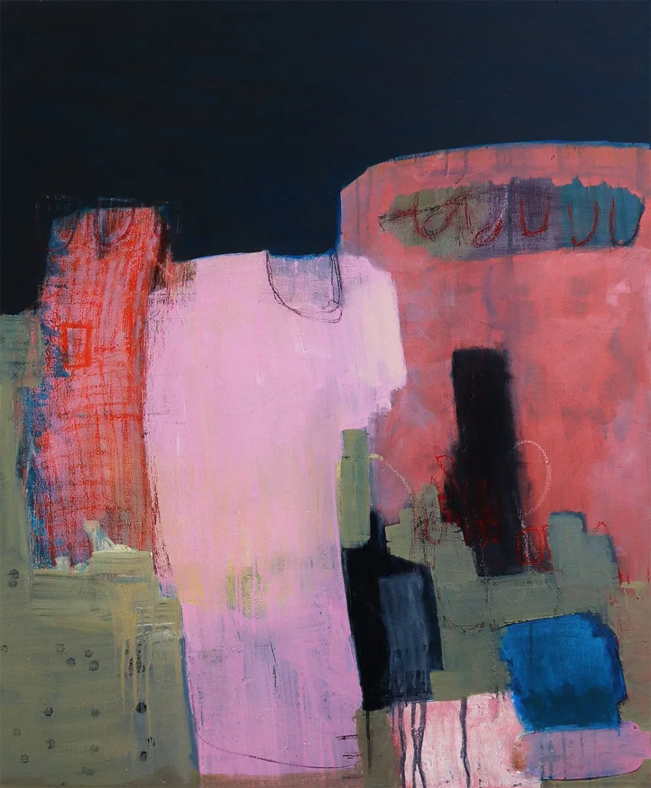
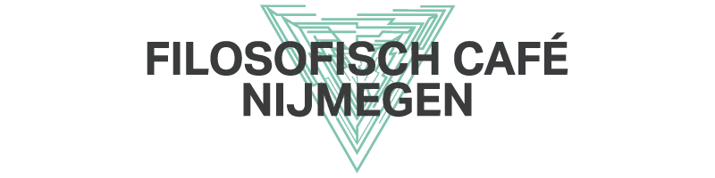

Evenement
Expositie Marlie Duizings in kunst in het kerkje
- Wanneervrijdag 20 november t/m zondag 6 december 2026
- WaarKerkje van Persingen
Persingense straat 7 Persingen, 5363 VE Velp Route - Contactkunstinhetkerkje.nl
exposities@kunstinhetkerkje.nl

Stichting Kunst in het Kerkje presenteert in het Vincentiuskerkje in Velp bij Grave een expositie van Marlie Duizings. Zij toont schilderijen en werken op papier waarin waarneming en innerlijke verbeelding samenkomen. De expositie is te zien op vrijdag, zaterdag en zondag.
Duizings begon haar opleiding met beeldhouwen aan de Kunstacademie Maastricht en de Rietveld Academie in Amsterdam. Gaandeweg verschoof haar aandacht naar het schilderen, waarin ze de vrijheid vond om vormen, herinneringen en innerlijke beelden met elkaar te verbinden.
Fotografie, tekenen en schilderen zijn voor haar verschillende fasen van hetzelfde creatieve proces. Met de camera kijkt ze aandachtig naar vorm, licht en structuur, en in haar tekeningen onderzoekt ze beelden die later in haar schilderijen terugkomen. Natuurlijke vormen en archetypische beelden spelen daarbij een grote rol. Vaak zijn het de beelden die ze ziet wanneer ze haar ogen sluit, die het vertrekpunt vormen.
De series Inner Landscapes, Archetypes en It's all in your head komen voort uit de zoektocht naar de verbinding tussen de zichtbare werkelijkheid en de innerlijke wereld. Haar schilderijen nodigen uit tot verstilling en laten ruimte voor wat zich niet direct laat benoemen.

Meer evenementen bij Kerkje van Persingen
Er staan nu geen andere evenementen van Kerkje van Persingen in de agenda.
Binnenkort in Nijmegen

UitgelichtFilosofisch Cafe bij Café ’t Haantje2 nov, 20.00 uurCafe 't Haantje 3nov Krachtige collectieven3 nov, 19.30 uurThiemeloods
5nov
Krachtige collectieven3 nov, 19.30 uurThiemeloods
5nov “We the People” – 250 USA in koormuziek5 nov, 20.15 uurTitus Brandsma Gedachteniskerk
6nov
“We the People” – 250 USA in koormuziek5 nov, 20.15 uurTitus Brandsma Gedachteniskerk
6nov “Spurensuche” – Kamerconcert met strijkkwartet6 nov, 20.00 uurStadthalle Kleve
“Spurensuche” – Kamerconcert met strijkkwartet6 nov, 20.00 uurStadthalle Kleve